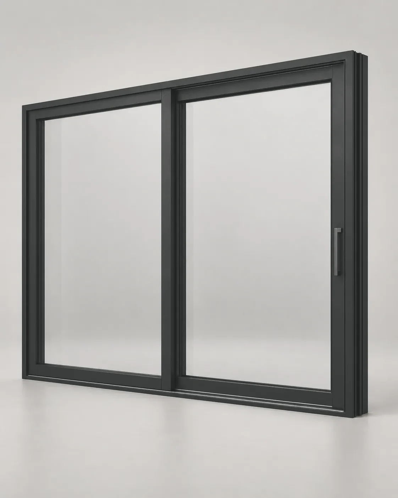
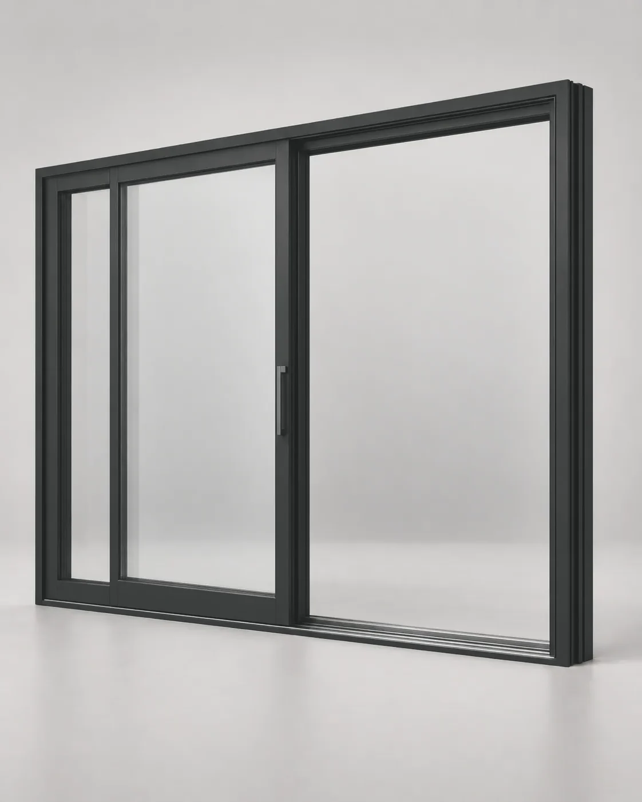
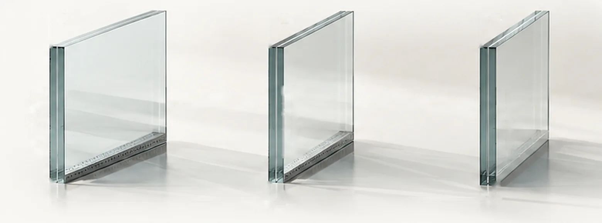
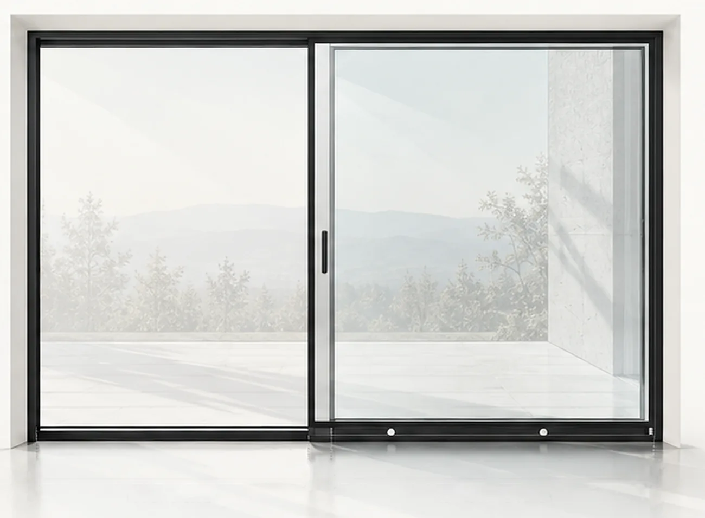
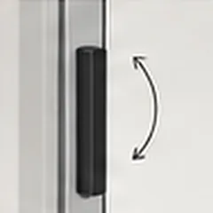
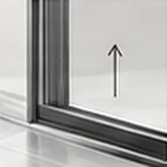
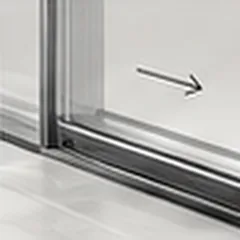
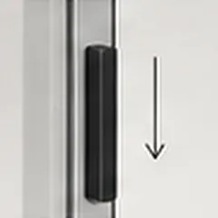

HS-портал · Подъемно-сдвижная система
Подъёмно-раздвижные алюминиевые двери для выхода на террасу и в сад. Готовые размеры с ценой и двери под ваш проём — замер бесплатно.
01 · Что такое HS-портал
Раздвижная алюминиевая дверь для выхода на террасу и в сад. Ручкой створку приподнимают на роликах, и она уходит вдоль стены — не распахивается в комнату. В закрытом положении створка опускается и прижимается к уплотнителям.
02 · Производство
Материал
Алюминиевый профиль с терморазрывом: не ржавеет и держит большие створки.
Цвет
Больше 200 оттенков палитры RAL Classic. Здесь — десять самых частых.
Объекты
03 · Схема открывания
Выберите створки, ширину и схему — покажем проход и готовую дверь.
Проём другого размера? Рассчитаем бесплатно или вызовите замерщика — тоже бесплатно.
* Проход указан ориентировочно. Финальную геометрию и монтажный узел подтверждает инженер.
04 · Готовые размеры
Три стандартных размера под типовые проёмы загородного дома. Цвет и сторону открывания выбираете в карточке. Цена — за конструкцию, доставку и монтаж посчитаем после бесплатного замера.
05 · Расчёт
Укажите примерный размер проёма, схему и стеклопакет. Предварительную стоимость покажем сразу — без регистрации и отправки формы.
06 · Спецификация
Основные размеры профиля, варианты стеклопакетов, герметичность, порог и работа подъёмно-раздвижного механизма — без лишней терминологии.
Базовый вариант для большинства схем HS: одна линия движения и одна соседняя секция.
Более глубокая рама для многопольных схем, когда створки должны работать на трёх уровнях.
«40 мм» — это общая толщина пакета, а не толщина одного стекла. Внутри — три закалённых стекла 6 мм и две герметичные камеры, разделённые дистанционными рамками. Закалка обязательна для всех стёкол.

010203 наружное стеклосреднее стекловнутреннее стекло камера 1камера 2 40 ммГерметичность HS-портала
Герметичность зависит не только от профиля: важны прижим створки, уплотнения, нижний порог, дренаж и монтажное примыкание.
При закрывании Lift&Slide створка опускается и возвращается к рабочему контуру уплотнений.
Положение порога согласуем с чистовым полом. Низкий визуальный порог не отменяет требований к гидроизоляции.
Вода, попавшая в зону нижнего профиля, должна иметь предусмотренный путь наружу — его нельзя перекрывать отделкой.
Даже хороший профиль не компенсирует неверную геометрию основания, монтажный шов или наружное примыкание.
Это характеристика испытанной профильной системы. Герметичность готового портала зависит ещё и от стеклопакета, изготовления, регулировки и монтажа.
Подъёмно-раздвижной механизм позволяет легко открывать большие и тяжёлые створки. Поворот ручки поднимает створку, разгружает уплотнения, после чего она плавно движется по направляющей параллельно фасаду.


01Фурнитура переводит створку из закрытого состояния.

02Вес переносится на роликовые каретки, прижим к уплотнениям снимается.

03Створка плавно движется вдоль соседней секции по направляющей.

04В обратном положении створка опускается и возвращается к контуру уплотнений.
Процесс
Проверяем геометрию проёма, уровень чистового пола, основание и условия монтажа.
Определяем схему открывания, стеклопакет, пороговый узел и готовим точную смету.
Собираем портал, проверяем геометрию, комплектацию и работу Lift&Slide механизма до отгрузки.
Устанавливаем, герметизируем, регулируем створки и сдаём готовую конструкцию на объекте.
Вопросы и ответы
Цена готовых дверей указана в каталоге — это стоимость конструкции стандартной комплектации. Для другого размера, стекла или цвета воспользуйтесь калькулятором: он сразу покажет ориентировочную цену, точную инженер назовёт после бесплатного замера.
До 40 дней после подтверждения заказа при покупке готовой системы (стандарт), индивидуальные проекты могут изготавливаться от 45 дней до 60 дней — все зависит от размеров и конфигураций. Точную дату доставки или самовывоза согласует менеджер, когда подтвердит заказ.
Около 12 % от стоимости конструкций, минимум 45 000 ₽ — по Москве и МО до 50 км от МКАД. Итоговую сумму фиксируем в договоре после замера. Замер бесплатный.
При закрытии створка опускается и прижимается к уплотнителям по всему контуру, профиль — с терморазрывом, стеклопакет — 40 мм, двухкамерный, стёкла закалённые. Узел примыкания к полу и стенам подбираем на замере.
Высота портала - до 3700 мм, ширина — до 19 800 мм: проём закрываем 2, 3, 4 или 6 створками. Если створка больше 5 м², ставим триплекс, а больше 8,5 м² — понадобятся спецтехника для монтажа и стекло от 8 мм.
Да, любой цвет по RAL. Цвет не влияет на стоимость
Онлайн-оплаты на сайте нет. После заказа c вами свяжется менеджер для подтверждения заказа. После подтверждения - подписываем договор и выставляем счёт.

Ваш проект
Пришлите размеры, план дома или фотографию. Инженер проверит смету и подготовит предварительный расчёт.
HS-портал работает не отдельно от дома, а вместе с фасадом, интерьером и маршрутом на участок. Показываем именно этот результат.

Раздвижная часть объединена с глухим остеклением в одну архитектурную линию.

Широкий проход из жилой зоны без зоны распахивания створки.
Большой открываемый проём при минимальном визуальном дроблении фасада.